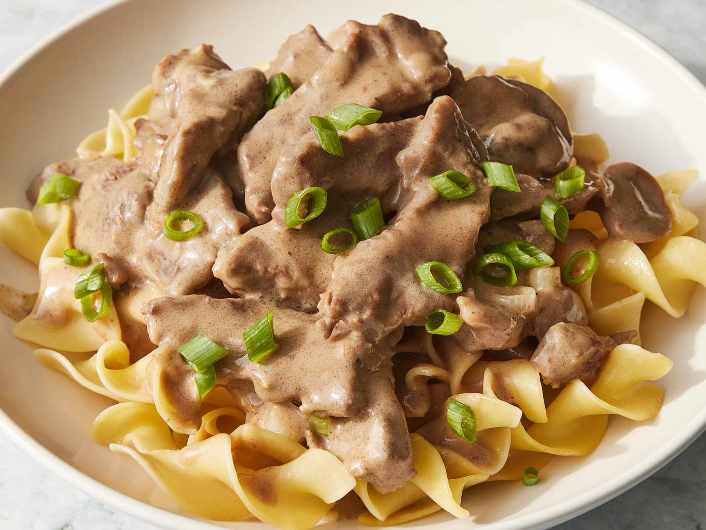

Beef Stroganoff

Description
A classic, beginner-friendly recipe for beef stroganoff.
Served over egg noodes, this dish is creamy, hearty, and
great for big dinner parties or lower-energy nights.
Ingredients
- 1/2 lb. boneless rib eye
- 2 tbsp. vegetable oil
- 1 small onion
- 5 oz. brown mushrooms
- 2 tbsp. butter
- 1 tbsp. flour
- 1 cup beef broth
- 1 tbsp. dijon mustard
- 1/3 cup sour cream
- salt and pepper, to taste
- 8 oz. egg noodles
- chives, chopped (for garnish)
Steps
- Use a tenderizer to flatten the steaks. Once tendered, slice into thin strips. Trim off any excess fat. Season strips with salt and pepper.
- Heat up 1 tablespoon of oil in a large skillet over high heat. Put in as many as the beef strips as you can without overcrowding the pan. Spread
out the strips evenly and let cook for 30 seconds. Then, turn over the strips and let cook on the other side for an additioanl 30 seconds. Take
the strips out of the pan and rest them on a plate. Repeat with any beef that could not be cooked in the first batch, and do not worry about
any undercooked/pink bits for now.
- Lower heat to medium and add butter to the pan. Once melted, add onions, cook for one minute, then add mushrooms.
- Cook mushrooms until golden. Dislodge anything sticking to the pan as this will add flavor.
- Add flour, and stir for one minute.
- Add half the broth and continue stirring. Once it is incorporated, add the remainder.
- Add sour cream and mustard. Stir in until incorporated (it's alright if the sour cream looks split, it'll 'melt' as it heats up).
- Bring to simmer, then lower heat to medium-low. Let simmer for 3-5 minutes, until it thickens and has a creamier consistency. Adjust salt and pepper to taste.
- Add in beef. simmer for one minute, and remove immediately from stove.
- Serve over egg noodles. Garnish with chives.